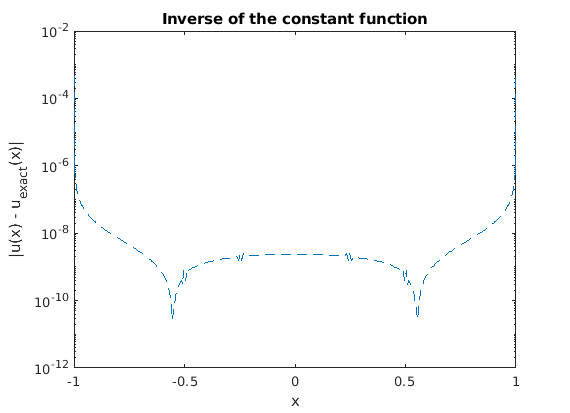
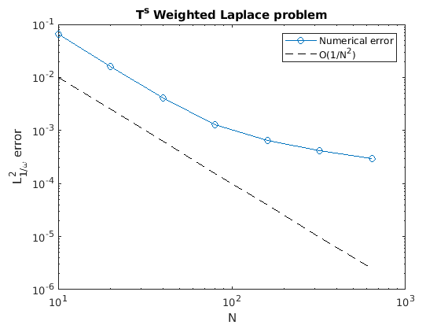
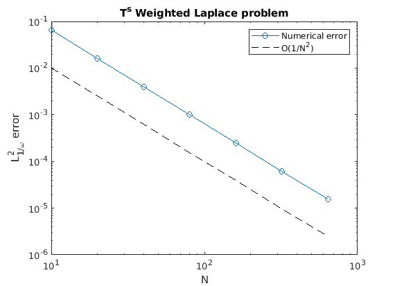

Contents
Resolution of Symm's integral equation
clear all;
close all;
Mesh and Boundary element space
c = openline(-1,1);
m = meshCurve(c,400,'varChange',{@cos,[-pi,0]});
edges = bnd(m);
X1 = edges.vtx(1,:);
X2 = edges.vtx(2,:);
[X,Y,Z] = FunR3.XYZ;
omega1 = sqrt((X1(1) - X).^2 + (X1(2) - Y).^2 + (X1(3) - Z).^2);
omega2 = sqrt((X2(1) - X).^2 + (X2(2) - Y).^2 + (X2(3) - Z).^2);
omega = sqrt(1 - X^2);
singVtx = [X1;X2];
singPow = [-1/2;-1/2];
sing = {singVtx,singPow};
gss = 5;
tic;
Gamma = Wdom(m,gss,1/omega,sing);
toc;
check = integral(Gamma,0*X +1);
pi - check
Vh = P1(m);
Elapsed time is 1.510421 seconds.
ans =
-1.2697e-12
Generalized eigenvalue problem
k = 0;
GXY = @(X,Y)femGreenKernel(X,Y,'[log(r)]',k);
Somega = -1/(2*pi)*(...
integral(Gamma,Gamma,Vh,GXY,Vh) ...
+ regularize(Gamma,Gamma,Vh,'[log(r)]',Vh));
Iomega_1 = integral(Gamma,Vh,Vh);
[P,D] = eig(Iomega_1\Somega);
d = diag(D);
d = sort(d,'descend');
disp('Eigenvalues of S_omega :')
disp(' ');
disp(d(1:10))
dtheo = 1./(2*(0:9)');
dtheo(2) = log(2)/2;
dtheo(1) = 1/2;
err = norm(d(1:10)- dtheo,2)/norm(d(1:10),2);
fprintf('\n Relative error: = %s \n\n',num2str(err));
Eigenvalues of S_omega :
0.5000
0.3466
0.2500
0.1667
0.1250
0.1000
0.0833
0.0714
0.0625
0.0556
Relative error: = 5.9533e-09
Galerkin solution and order of convergence
T0 = 0*X + 1;
uexact = 2/log(2)*T0;
rhs = integral(Gamma,Vh,T0);
u = Somega\rhs;
figure;
semilogy(m.vtx(:,1),abs(u-uexact(m.vtx)),'--');
title('Inverse of the constant function')
xlabel('x')
ylabel('|u(x) - u_{exact}(x)|')
e2 = u'*Iomega_1*u - ...
2*u'*integral(Gamma,Vh,uexact)...
+ integral(Gamma,uexact^2);
e = sqrt(e2)
e =
4.4771e-05

Order of convergence
Ns = [10; 20; 40; 80; 160; 320; 640];
gss = 3;
T2 = 2*X^2 - 1;
uexact = 4*T2;
e = zeros(length(Ns),1);
for i = 1:length(Ns)
N = Ns(i);
m = meshCurve(c,N,'varChange',{@cos,[-pi,0]});
Gamma = Wdom(m,gss,1/omega,sing);
Vh = P1(m);
rhs = integral(Gamma,Vh,T2);
k = 0;
GXY = @(X,Y)femGreenKernel(X,Y,'[log(r)]',k);
Somega = -1/(2*pi)*(...
integral(Gamma,Gamma,Vh,GXY,Vh) ...
+ regularize(Gamma,Gamma,Vh,'[log(r)]',Vh));
Iomega_1 = integral(Gamma,Vh,Vh);
u = Somega\rhs;
e2 = u'*Iomega_1*u - ...
2*u'*integral(Gamma,Vh,uexact)...
+ integral(Gamma,uexact^2);
e(i) = sqrt(e2);
end
figure;
loglog(Ns,e,'-o');
hold on
loglog(Ns,Ns.^(-2),'k--');
legend({'Numerical error','O(1/N^2)'})
xlabel('N')
ylabel('L_{1/\omega}^2 error')
title('T^s Weighted Laplace problem')
eoc = diff(log(e))./diff(log(Ns));
disp('Error:')
disp(e);
disp('Estimated order of convergence')
disp(eoc);
Error:
0.0646
0.0161
0.0042
0.0013
0.0006
0.0004
0.0003
Estimated order of convergence
-2.0050
-1.9508
-1.6819
-1.0267
-0.6043
-0.5142

More Gauss points
gss = 15;
e = zeros(length(Ns),1);
for i = 1:length(Ns)
N = Ns(i);
m = meshCurve(c,N,'varChange',{@cos,[-pi,0]});
Gamma = Wdom(m,gss,1/omega,sing);
Vh = P1(m);
rhs = integral(Gamma,Vh,T2);
k = 0;
GXY = @(X,Y)femGreenKernel(X,Y,'[log(r)]',k);
Somega = -1/(2*pi)*(...
integral(Gamma,Gamma,Vh,GXY,Vh) ...
+ regularize(Gamma,Gamma,Vh,'[log(r)]',Vh));
Iomega_1 = integral(Gamma,Vh,Vh);
u = Somega\rhs;
e2 = u'*Iomega_1*u - ...
2*u'*integral(Gamma,Vh,uexact)...
+ integral(Gamma,uexact^2);
e(i) = sqrt(e2);
end
figure;
loglog(Ns,e,'-o');
hold on
loglog(Ns,Ns.^(-2),'k--');
legend({'Numerical error','O(1/N^2)'})
xlabel('N')
ylabel('L_{1/\omega}^2 error')
title('T^s Weighted Laplace problem')
eoc = diff(log(e))./diff(log(Ns));
disp('Error:')
disp(e);
disp('Estimated order of convergence')
disp(eoc);
Error:
0.0646
0.0160
0.0040
0.0010
0.0002
0.0001
0.0000
Estimated order of convergence
-2.0115
-2.0029
-2.0007
-2.0002
-1.9999
-1.9986
